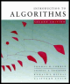

|
|
< Day Day Up > |
|
|  |
|
|||||||||||
| Table of Contents | |||
| Part I - | |||
| Chapter 1 | - | ||
| Chapter 2 | - | ||
| Chapter 3 | - | ||
| Chapter 4 | - | ||
| Chapter 5 | - | ||
| Part II - | |||
| Chapter 6 | - | ||
| Chapter 7 | - | ||
| Chapter 8 | - | ||
| Chapter 9 | - | ||
| Part III - | |||
| Chapter 10 | - | ||
| Chapter 11 | - | ||
| Chapter 12 | - | ||
| Chapter 13 | - | ||
| Chapter 14 | - | ||
| Part IV - | |||
| Chapter 15 | - | ||
| Chapter 16 | - | ||
| Chapter 17 | - | ||
| Part V - | |||
| Chapter 18 | - | ||
| Chapter 19 | - | ||
| Chapter 20 | - | ||
| Chapter 21 | - | ||
| Part VI - | |||
| Chapter 22 | - | ||
| Chapter 23 | - | ||
| Chapter 24 | - | ||
| Chapter 25 | - | ||
| Chapter 26 | - | ||
| Part VII - | |||
| Chapter 27 | - | ||
| Chapter 28 | - | ||
| Chapter 29 | - | ||
| Chapter 30 | - | ||
| Chapter 31 | - | ||
| Chapter 32 | - | ||
| Chapter 33 | - | ||
| Chapter 34 | - | ||
| Chapter 35 | - | ||
| Part VIII - | |||
| Appendix A | - | ||
| Appendix B | - | ||
| Appendix C | - | ||
|
|
< Day Day Up > |
|